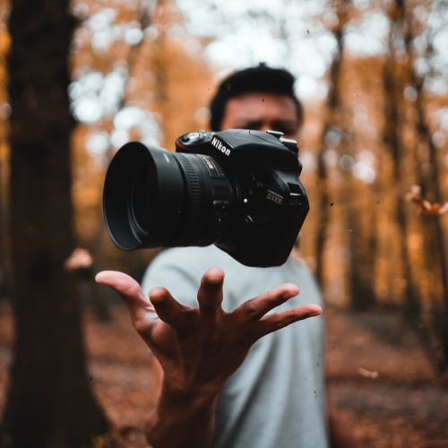
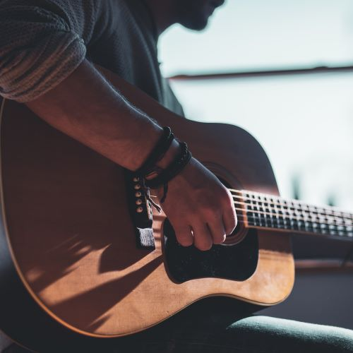

Photography has been a deeply ingrained passion of mine for as long as I can remember. It's a form of self-expression that allows me to capture the world's beauty, moments, and emotions through the lens of my camera. The act of framing the perfect shot, adjusting settings, and waiting for the right lighting is a meditative and thrilling experience. Photography grants me the extraordinary ability to freeze time, preserving the essence of a moment for eternity. Whether it's the vibrant colors of a sunset, the candid expressions of loved ones, or the intricate details of the world around us, photography is my way of storytelling and sharing the remarkable narratives that unfold daily. It's more than just a hobby; it's a lifelong journey of discovery and a profound source of inspiration that continually fuels my creative spirit.
Playing the guitar is a passion that resonates deep within my soul. It's not just about strumming strings; it's about creating melodies that echo emotions and tell stories. The sound of the guitar, whether it's the warm embrace of an acoustic or the electric's electrifying energy, is a source of solace and a conduit for self-expression. Learning new songs, mastering chords, and crafting my own tunes is an ongoing journey of growth and discovery. The instrument has a unique ability to transport me to different emotional realms, whether it's the joy of a lively riff, the melancholy of a soulful ballad, or the raw energy of a rock solo. Playing the guitar is my sanctuary, my therapy, and a lifelong pursuit that continues to enrich my life with music's boundless possibilities.
Hiking is a passion that connects me to the raw, unspoiled beauty of nature. It's an adventurous escape from the daily grind, a chance to immerse myself in the great outdoors, and a journey into the heart of the wilderness. Every trail offers a different perspective, and with each step, I find tranquility and awe in the world's natural wonders. From lush forests to towering mountains and winding canyons, hiking provides me with a profound sense of freedom and exploration. It's an opportunity to challenge my limits, unplug from technology, and revel in the simplicity of life. The serenity of a quiet forest, the breathtaking views from a mountaintop, and the camaraderie of fellow hikers are all part of the allure. Hiking is more than a hobby; it's a way of life that keeps me grounded, inspired, and deeply connected to the earth.
 These are just a few of the activities I enjoy in my free time. Hobbies are a great way to relax, learn, and have fun. Whether it's behind the camera, with a guitar in hand, or out on the trails, I always find joy in pursuing my passions.